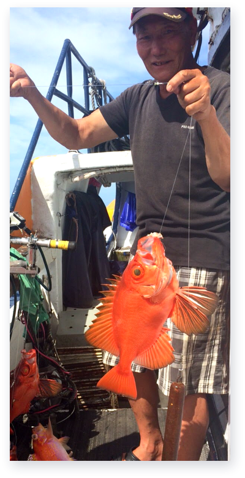

台南蝦仁飯
2021 / 07 / 22
台南蝦仁飯也可以自己在家做!不知道有沒有人跟大口一樣，特別熱愛台南的蝦仁飯，尤其那甜滋滋又香噴噴的蝦高湯拌入白飯中，再加上幾隻火燒蝦，簡單又讓人回味無窮!雖然北部買不太到火燒蝦，但也可以用白蝦或其他蝦子替代，自行在家煉製蝦高湯，就能做出甘醇鮮美的美味蝦仁飯，簡單又好吃，趕快一起來看看吧!
食材
魷魚
100g
老薑片
3片
米酒
1大匙
蒜末
1大匙
蔥末
2大匙
辣椒末
適量
涼拌醬汁
醬油
一大匙
甜辣醬
一大匙
白醋
1-1/2大匙
糖
1/2茶匙
香油
1大匙
1.煮飯
內鍋米1：水0.8,目測水就大概蓋過米就可以了！外鍋1杯水。 因之後還會加蝦高湯拌飯,避免飯最後過於軟爛所以我選擇煮飯時水減量。
2.蔥白及蔥綠分開放
蔥白及蔥綠分開放，蒜頭切丁或末
3.起油鍋加入蒜頭及蔥白爆香
4.
再加入蔥綠及醃漬好的火燒蝦仁拌炒，蝦仁半熟後將白米飯加入拌炒至上色
PREVIOUS POST
知名ＤＪ從小迷釣魚 不只釣魚也釣出自己的人生體悟
NEXT POST
基隆嶼國際磯釣賽暖身記者會，達人齊聚共推安全永續觀念
關注我們
加入生活圈

公主888娛樂船
Line
鮮魚管家
Line
公主888

最新文章

知名 DJ 從小迷釣魚
2021 / 07 / 22

讓我們一起基隆趣！ 2020年基隆嶼開放登島注意事項
2021 / 07 / 22
大咬？小搞搞？ 五個釣魚專業術語
2021 / 07 / 22

知名 DJ 從小迷釣魚
2021 / 07 / 22

讓我們一起基隆趣！ 2020年基隆嶼開放登島注意事項
2021 / 07 / 22
文章標籤
店家推薦
心得
觀光旅遊
漁貨
食譜